Code
library(tidyverse)
options(dplyr.summarise.inform = FALSE)Lab 2 Analyzing multivariate salmon data
library(tidyverse)
options(dplyr.summarise.inform = FALSE)For this lab you will use multivariate auto-regressive state-space (MARSS) to analyze multivariate salmon data from the Columbia River. These data are noisy and gappy. They are estimates of total spawner abundance and might include hatchery spawners.
esu[7]esu[2]esu[11]These data are from the Coordinated Assessments Partnership (CAP) and downloaded using the rCAX R client for the CAX (the CAP database) API. The data are saved in Lab-2/Data_Images/columbia-river.rda. See Lab-2/Data_Images/setup_data_2025.R for the script to create the data.
load("Data_Images/esa-salmon.rda")The data set has data for endangered and threatened ESU (Evolutionary Significant Units) and DPS (Distinct Population Segments) in the Washington and Oregon.
esu <- unique(esa.salmon$esu_dps)
esu [1] "Salmon, Chinook (Lower Columbia River ESU)"
[2] "Salmon, Chinook (Snake River spring/summer-run ESU)"
[3] "Salmon, Chinook (Upper Columbia River spring-run ESU)"
[4] "Salmon, Chinook (Upper Willamette River ESU)"
[5] "Salmon, chum (Columbia River ESU)"
[6] "Salmon, coho (Lower Columbia River ESU)"
[7] "Salmon, coho (Oregon Coast ESU)"
[8] "Salmon, sockeye (Snake River ESU)"
[9] "Steelhead (Lower Columbia River DPS)"
[10] "Steelhead (Middle Columbia River DPS)"
[11] "Steelhead (Snake River Basin DPS)"
[12] "Steelhead (Upper Columbia River DPS)"
[13] "Steelhead (Upper Willamette River DPS)" 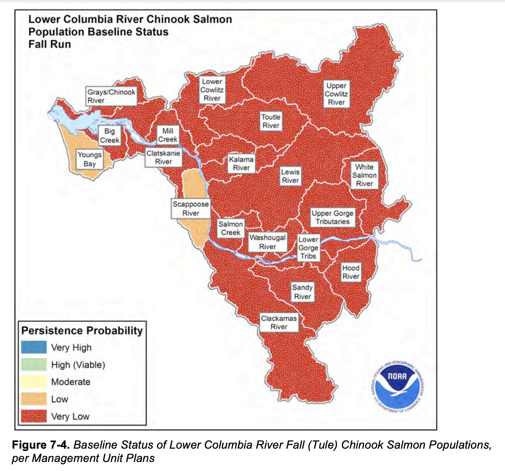
The dataset has the following columns
colnames(esa.salmon)[1] "species" "esu_dps" "majorpopgroup" "esapopname"
[5] "commonpopname" "run" "spawningyear" "value" Let’s load one ESU and make a plot. Create a function.
plotesu <- function(esuname){
df <- esa.salmon %>% subset(esu_dps %in% esuname)
ggplot(df, aes(x=spawningyear, y=log(value), color=majorpopgroup)) +
geom_point(size=0.2, na.rm = TRUE) +
theme(strip.text.x = element_text(size = 3)) +
theme(axis.text.x = element_text(size = 5, angle = 90)) +
facet_wrap(~esapopname) +
ggtitle(paste0(esuname, collapse="\n"))
}plotesu(esu[7])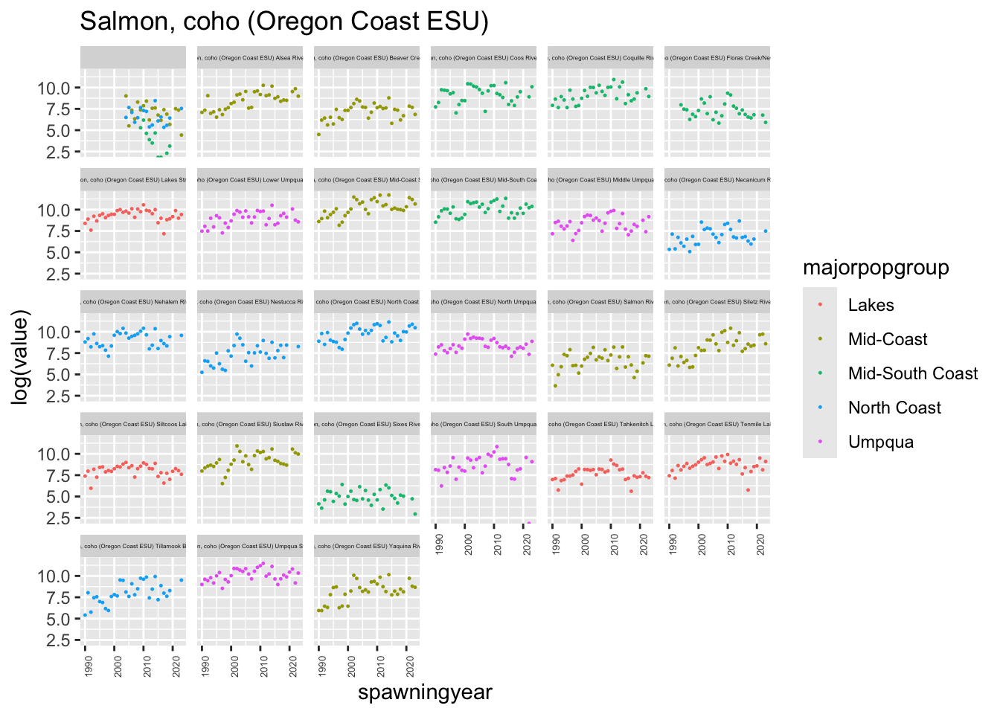
plotesu(esu[11])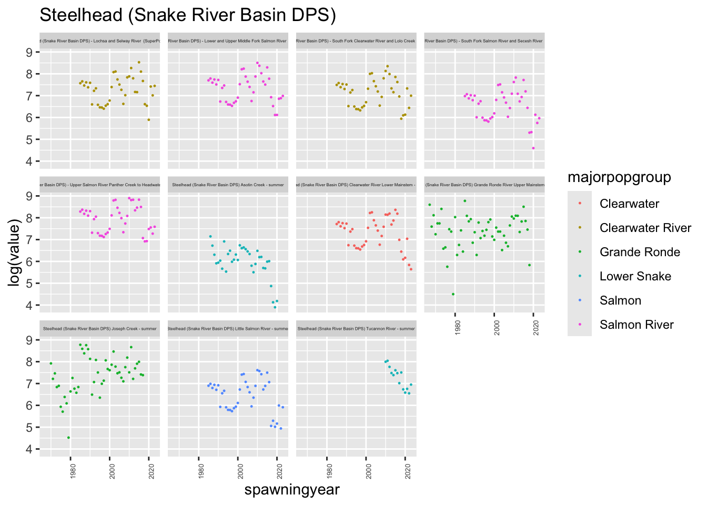
plotesu(esu[2])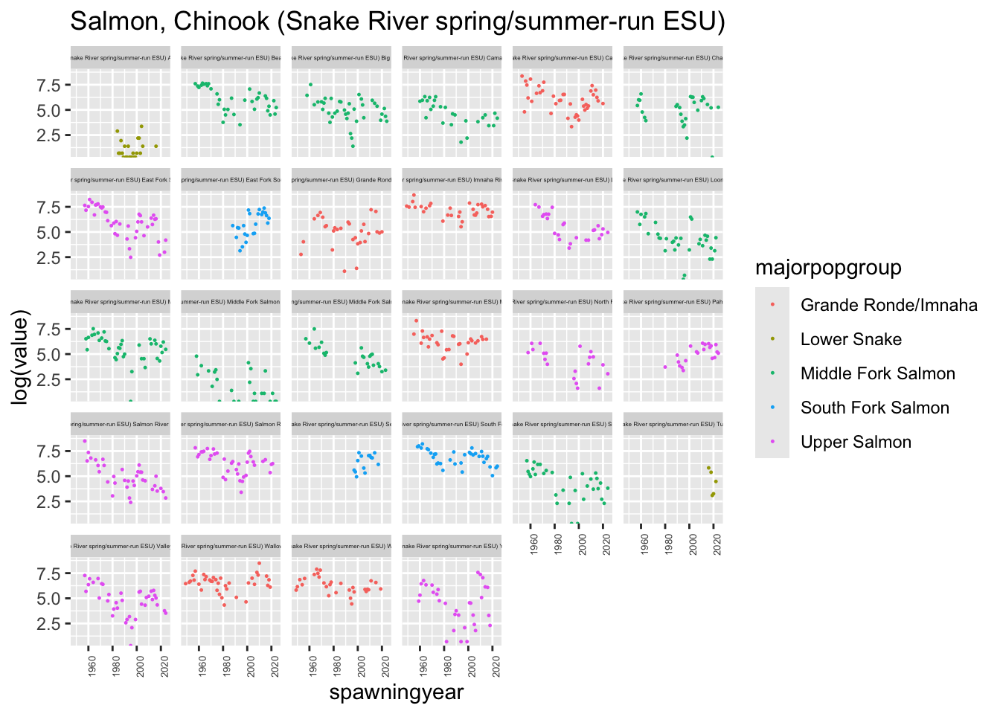
df <- esa.salmon %>% subset(species == "Chinook salmon")
ggplot(df, aes(x=spawningyear, y=log(value), color=run)) +
geom_point(size=0.2, na.rm = TRUE) +
theme(strip.text.x = element_text(size = 3)) +
theme(axis.text.x = element_text(size = 5, angle = 90)) +
facet_wrap(~esapopname)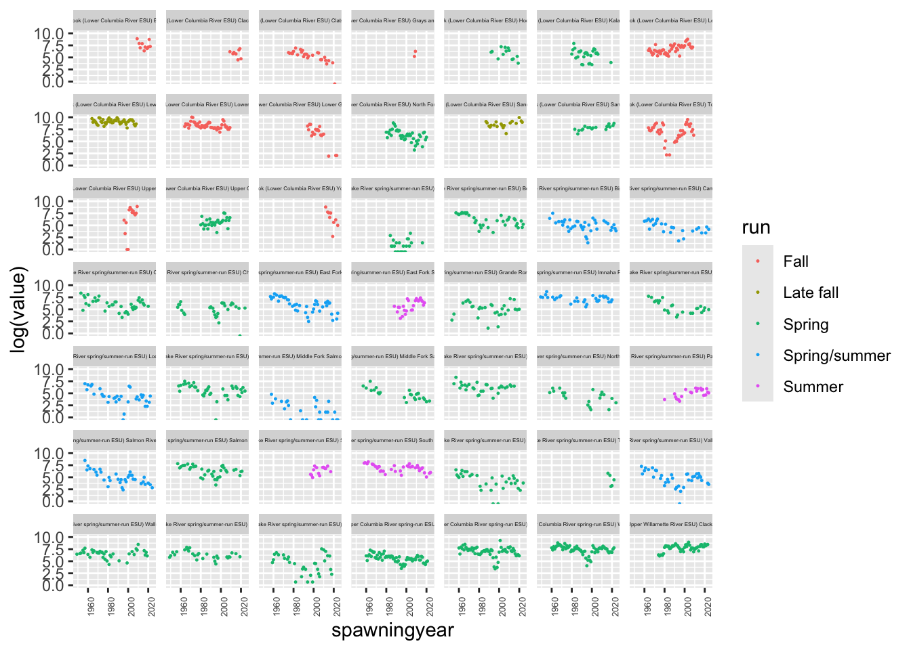
Create estimates of spawner abundance for all missing years and provide estimates of the decline from the historical abundance.
Evaluate support for the major population groups. Are the populations in the groups more correlated than outside the groups?
Evaluate the evidence of correlation of salmon returns with climate indices. We will talk about how to do this on the Tuesday after lab.
Simplify
If your ESU has many populations, start with a smaller set of 4-7 populations.
Assumptions
You can assume that R="diagonal and equal" and A="scaling". Assume that “historical” means the earliest years available for your group.
States
Your abundance estimate is the “x” or “state” estimates. You can get this from
fit$statesor
tsSmooth(fit)where fit is from fit <- MARSS()
plotting
Estimate of the mean of the spawner counts based on your x model.
autoplot(fit, plot.type="fitted.ytT")diagnostics
autoplot(fit, plot.type="residuals")Describe your assumptions about the x and how the data time series are related to x.
Write out your assumptions as different models in matrix form, fit each and then compare these with AIC or AICc.
Do your estimates differ depending on the assumptions you make about the structure of the data, i.e. you assumptions about the x’s, Q, and U.
Here I show how I might analyze the Upper Columbia Steelhead data.
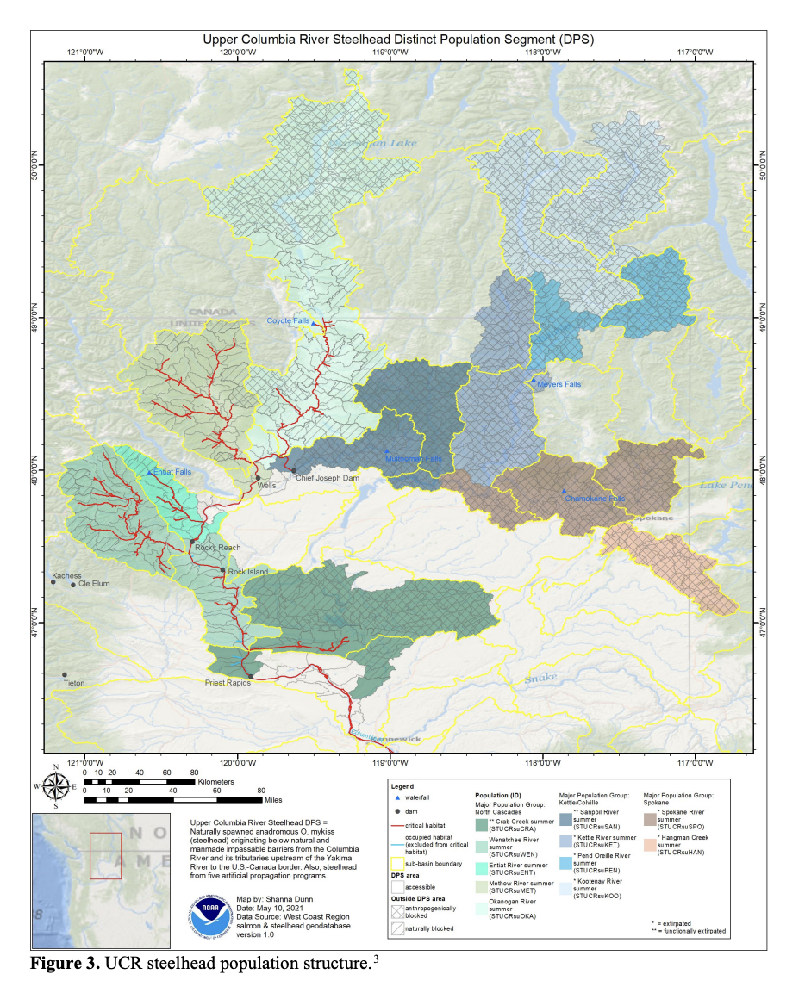
Set up the data. We need the time series in a matrix with time across the columns.
Load the data.
load("Data_Images/esa-salmon.rda")Wrangle the data.
library(tidyverse)
esunum <- which(esu == "Steelhead (Upper Columbia River DPS)")
esuname <- esu[esunum]
dat <- esa.salmon %>%
subset(esu_dps == esuname) %>% # get only this ESU
mutate(log.spawner = log(value)) %>% # create a column called log.spawner
select(esapopname, spawningyear, log.spawner) %>% # get just the columns that I need
pivot_wider(names_from = "esapopname", values_from = "log.spawner") %>%
column_to_rownames(var = "spawningyear") %>% # make the years rownames
as.matrix() %>% # turn into a matrix with year down the rows
t() # make time across the columns
# MARSS complains if I don't do this
dat[is.na(dat)] <- NAClean up the row names
tmp <- rownames(dat)
tmp <- stringr::str_replace(tmp, "Steelhead [(]Upper Columbia River DPS[)]", "")
tmp <- stringr::str_replace(tmp, "River - summer", "")
tmp <- stringr::str_trim(tmp)
rownames(dat) <- tmpSpecify a model
mod.list1 <- list(
U = "unequal",
R = "diagonal and equal",
Q = "unconstrained"
)Fit the model. In this case, a BFGS algorithm is faster.
library(MARSS)Warning: package 'MARSS' was built under R version 4.4.3fit1 <- MARSS(dat, model=mod.list1, method="BFGS")Success! Converged in 105 iterations.
Function MARSSkfas used for likelihood calculation.
MARSS fit is
Estimation method: BFGS
Estimation converged in 105 iterations.
Log-likelihood: -111.3573
AIC: 260.7147 AICc: 265.9561
Estimate
R.diag 0.02043
U.X.Entiat 0.02235
U.X.Methow 0.01630
U.X.Okanogan 0.00529
U.X.Wenatchee -0.02063
Q.(1,1) 0.26388
Q.(2,1) 0.12962
Q.(3,1) 0.14589
Q.(4,1) 0.23793
Q.(2,2) 0.30235
Q.(3,2) 0.29398
Q.(4,2) 0.18411
Q.(3,3) 0.28774
Q.(4,3) 0.19401
Q.(4,4) 0.50313
x0.X.Entiat 4.62790
x0.X.Methow 6.53666
x0.X.Okanogan 6.34194
x0.X.Wenatchee 8.04854
Initial states (x0) defined at t=0
Standard errors have not been calculated.
Use MARSSparamCIs to compute CIs and bias estimates.Hmmmmm, the Q variance is so high that it perfectly fits the data. That doesn’t seem right.
autoplot(fit1, plot.type="fitted.ytT")MARSSresiduals.tT reported warnings. See msg element or attribute of returned residuals object.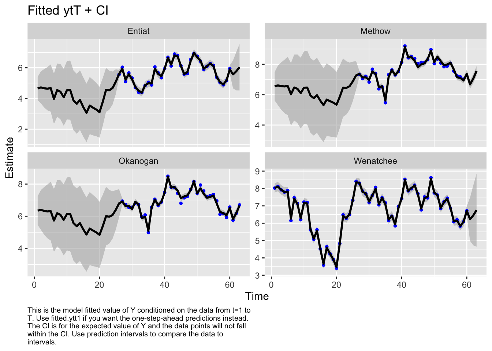
Let’s look at the corrplot. Interesting. The Methow and Entiat are almost perfectly correlated while the Entiat and Wenatchee are somewhat correlated. That makes sense if you look at a map.
library(corrplot)corrplot 0.95 loadedQ <- coef(fit1, type="matrix")$Q
corrmat <- diag(1/sqrt(diag(Q))) %*% Q %*% diag(1/sqrt(diag(Q)))
corrplot(corrmat)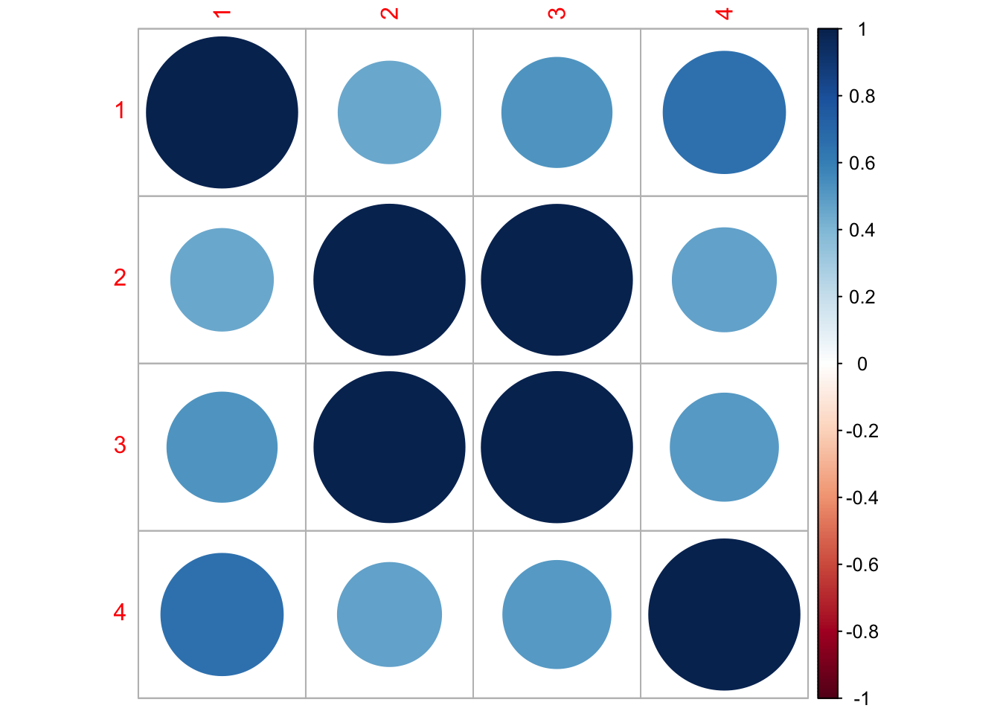
I need to use the EM algorithm (remove method="BFGS") because the BFGS algorithm doesn’t allow constraints on the Q matrix.
mod.list2 <- list(
U = "unequal",
R = "diagonal and equal",
Q = "equalvarcov"
)
fit2 <- MARSS(dat, model=mod.list2, control = list(maxit=1000))Success! abstol and log-log tests passed at 836 iterations.
Alert: conv.test.slope.tol is 0.5.
Test with smaller values (<0.1) to ensure convergence.
MARSS fit is
Estimation method: kem
Convergence test: conv.test.slope.tol = 0.5, abstol = 0.001
Estimation converged in 836 iterations.
Log-likelihood: -123.8193
AIC: 269.6386 AICc: 271.3641
Estimate
R.diag 0.1298
U.X.Entiat 0.0209
U.X.Methow 0.0256
U.X.Okanogan 0.0101
U.X.Wenatchee -0.0326
Q.diag 0.2599
Q.offdiag 0.2599
x0.X.Entiat 4.2230
x0.X.Methow 5.9537
x0.X.Okanogan 5.9256
x0.X.Wenatchee 8.0763
Initial states (x0) defined at t=0
Standard errors have not been calculated.
Use MARSSparamCIs to compute CIs and bias estimates.autoplot(fit2, plot.type="fitted.ytT")MARSSresiduals.tT reported warnings. See msg element or attribute of returned residuals object.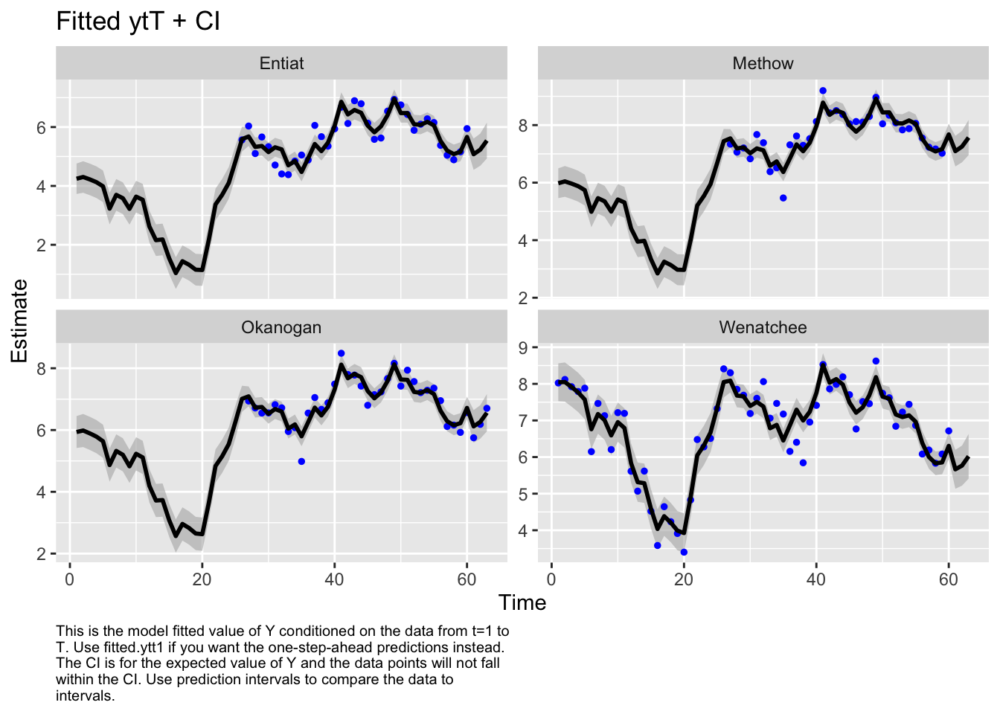
Now I want try something different. I will treat the Methow-Okanogan as one state and the Entiat-Wenatchee as another. I’ll let these be correlated together. Interesting, these two are estimated to be perfectly correlated.
mod.list3 <- mod.list1
mod.list3$Q <- "unconstrained"
mod.list3$Z <- factor(c("ew", "mo", "mo", "ew"))
fit3 <- MARSS(dat, model = mod.list3)Warning! Reached maxit before parameters converged. Maxit was 500.
neither abstol nor log-log convergence tests were passed.
MARSS fit is
Estimation method: kem
Convergence test: conv.test.slope.tol = 0.5, abstol = 0.001
WARNING: maxit reached at 500 iter before convergence.
Neither abstol nor log-log convergence test were passed.
The likelihood and params are not at the MLE values.
Try setting control$maxit higher.
Log-likelihood: -140.7562
AIC: 301.5124 AICc: 302.941
Estimate
A.Okanogan -0.69727
A.Wenatchee 1.54238
R.diag 0.18166
U.ew -0.02668
U.mo -0.00354
Q.(1,1) 0.21523
Q.(2,1) 0.21761
Q.(2,2) 0.22013
x0.ew 6.52058
x0.mo 7.44004
Initial states (x0) defined at t=0
Standard errors have not been calculated.
Use MARSSparamCIs to compute CIs and bias estimates.
Convergence warnings
Warning: the logLik parameter value has not converged.
Type MARSSinfo("convergence") for more info on this warning.autoplot(fit3, plot.type="fitted.ytT")MARSSresiduals.tT reported warnings. See msg element or attribute of returned residuals object.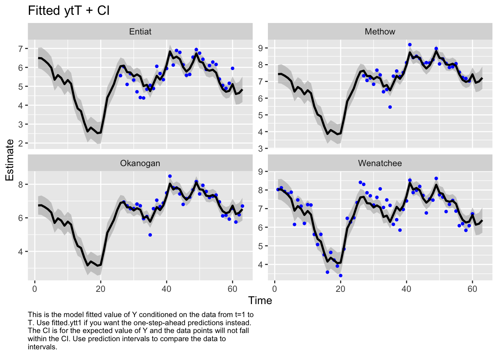
Finally, let’s look at the AIC values. Fit1 was very flexible and can put a line through the data so I know I have at least one model in the set that can fit the data. Well, the most flexible model is the best. At this point, I’d like to look just at data after 1980 or so. I don’t like the big dip that happened in the Wenatchee River. I’d want to talk to the biologists to find out what happened, especially because I know that there might be hatchery releases in this system.
aic <- c(fit1$AICc, fit2$AICc, fit3$AICc)
aic-min(aic)[1] 0.000000 5.407992 36.984932Let’s just look at the data after 1987 to eliminate that string of NAs in the 3 rivers.
dat87 <- dat[,colnames(dat)>1987]Let’s look the acf to look for evidence of cycling. Due to the nature of their life-cycle where they tend to return back to their spawning grounds after a certain numbers of years, we might expect some cycling although steelhead aren’t really known for this (unlike sockeye, chinook and pink).
Well no obvious cycles.
par(mfrow=c(2,2))
for(i in 1:4){
acf(dat87[i,], na.action=na.pass, main=rownames(dat87)[i])
}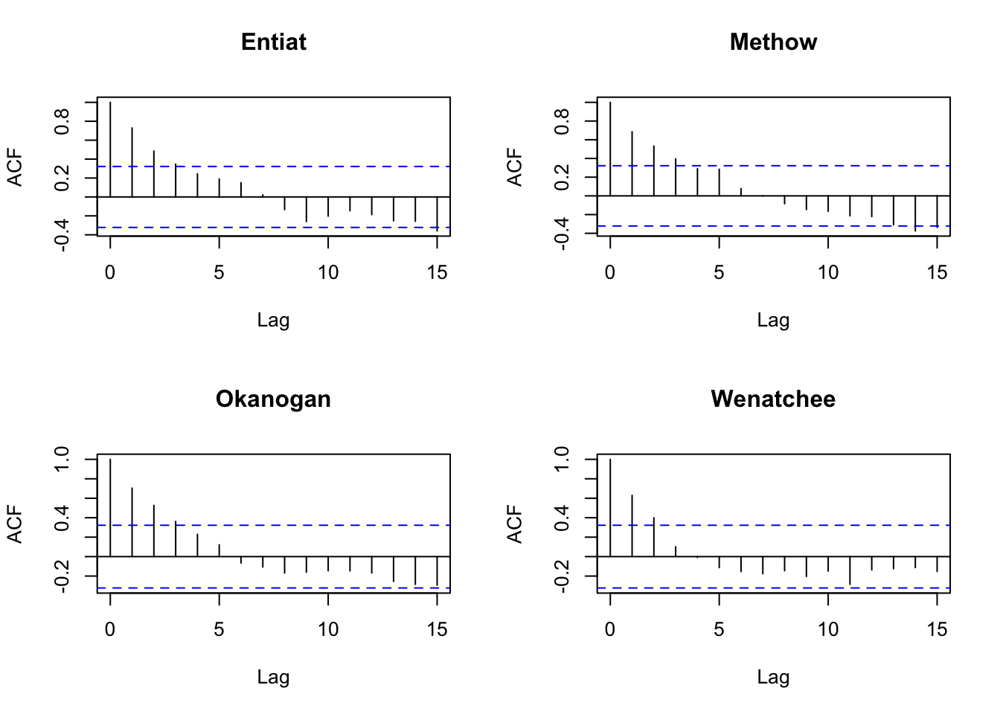
But let’s go through how we might include cycles. We are going to include cycles with frequency 3, 4, and 5, choosen to reflect steelhead returning after 3, 4 or 5 years.
TT <- dim(dat87)[2] #number of time steps
covariates <- rbind(
forecast::fourier(ts(1:TT, freq=3), K=1) |> t(),
forecast::fourier(ts(1:TT, freq=4), K=1) |> t(),
forecast::fourier(ts(1:TT, freq=5), K=1) |> t()
)Registered S3 method overwritten by 'quantmod':
method from
as.zoo.data.frame zoo Now let’s fit a model with these covariates. Let’s analyze the populations separately, so Q is diagonal.
mod.list4 <- list(
Q = "unconstrained",
U = "unequal",
R = "diagonal and equal",
D = "unconstrained",
d = covariates
)fit4.87 <- MARSS(dat87, model=mod.list4)Success! abstol and log-log tests passed at 82 iterations.
Alert: conv.test.slope.tol is 0.5.
Test with smaller values (<0.1) to ensure convergence.
MARSS fit is
Estimation method: kem
Convergence test: conv.test.slope.tol = 0.5, abstol = 0.001
Estimation converged in 82 iterations.
Log-likelihood: -60.21752
AIC: 206.435 AICc: 246.6904
Estimate
R.diag 0.00845
U.X.Entiat -0.01121
U.X.Methow 0.01362
U.X.Okanogan -0.00561
U.X.Wenatchee -0.05815
Q.(1,1) 0.22412
Q.(2,1) 0.12090
Q.(3,1) 0.14212
Q.(4,1) 0.13830
Q.(2,2) 0.24827
Q.(3,2) 0.24559
Q.(4,2) 0.15351
Q.(3,3) 0.25479
Q.(4,3) 0.15391
Q.(4,4) 0.32701
x0.X.Entiat 6.29104
x0.X.Methow 7.29788
x0.X.Okanogan 6.91910
x0.X.Wenatchee 8.59119
D.(Entiat,S1-3) -0.00137
D.(Methow,S1-3) -0.07273
D.(Okanogan,S1-3) -0.05124
D.(Wenatchee,S1-3) 0.02106
D.(Entiat,C1-3) 0.02913
D.(Methow,C1-3) -0.08274
D.(Okanogan,C1-3) -0.09202
D.(Wenatchee,C1-3) 0.05951
D.(Entiat,S1-4) -0.07178
D.(Methow,S1-4) -0.06765
D.(Okanogan,S1-4) -0.01512
D.(Wenatchee,S1-4) -0.01951
D.(Entiat,C1-4) 0.00231
D.(Methow,C1-4) -0.12711
D.(Okanogan,C1-4) -0.11559
D.(Wenatchee,C1-4) -0.10165
D.(Entiat,S1-5) -0.19542
D.(Methow,S1-5) 0.05351
D.(Okanogan,S1-5) 0.07279
D.(Wenatchee,S1-5) -0.18540
D.(Entiat,C1-5) -0.06542
D.(Methow,C1-5) 0.09547
D.(Okanogan,C1-5) 0.06379
D.(Wenatchee,C1-5) -0.08004
Initial states (x0) defined at t=0
Standard errors have not been calculated.
Use MARSSparamCIs to compute CIs and bias estimates.Let’s plot the estimates. broom::tidy() will get a data frame with the terms, estimates and CIs.
library(broom)
# get all the parameter estimates for D
df <- tidy(fit4.87) %>%
subset(stringr::str_sub(term,1,1)=="D")
# add a column with the river names
df$river <- as.factor(rep(rownames(dat87),nrow(covariates)))
# add a column for the lag or frequency
lags <- stringr::str_split(rownames(covariates), "-") %>% lapply(function(x){x[[2]]}) %>% unlist()
df$lag <- rep(lags, each=nrow(dat87))
# add column for the type of fourier
df$type <- rep(rownames(covariates), each=nrow(dat87))We can then plot this. Interesting. Some support for 5 year cycles.
ggplot(df, aes(x=type, y=estimate, col=lag)) +
geom_point() +
geom_errorbar(aes(ymin=conf.low, ymax=conf.up), width=.2, position=position_dodge(.9)) +
geom_hline(yintercept = 0) +
facet_wrap(~river) +
ggtitle("The cycle estimates with CIs")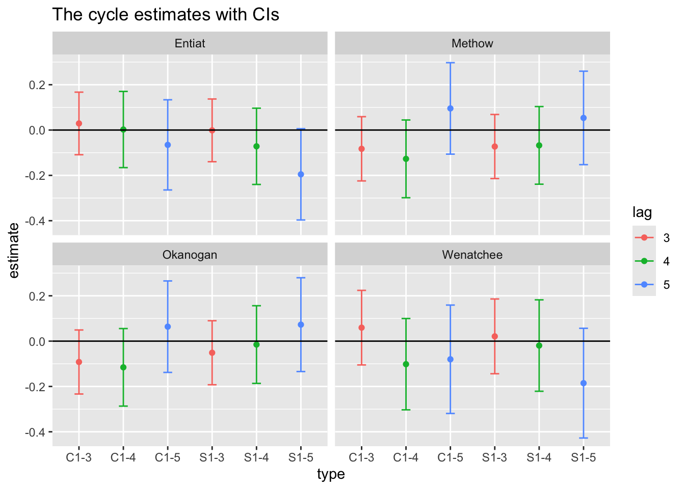
Let’s compare some other models.
# No cycles
mod.list <- list(
Q = "unconstrained",
U = "unequal",
R = "diagonal and equal"
)
fit1.87 <- MARSS(dat87, model=mod.list, silent=TRUE)
# Only lag 5 cycles
mod.list <- list(
Q = "unconstrained",
U = "unequal",
R = "diagonal and equal",
D = "unconstrained",
d = covariates[5:6,]
)
fit5.87 <- MARSS(dat87, model=mod.list, silent=TRUE)
# Cycles in the process
# which doesn't really make sense for salmon since the cycles are age-structure cycles
# which act like cycles in the observations
mod.list <- list(
Q = "unconstrained",
U = "unequal",
R = "diagonal and equal",
C = "unconstrained",
c = covariates
)
fit6.87 <- MARSS(dat87, model=mod.list, silent=TRUE)Hmm model without cyles is much better (lower AICc). Even if we only have the 5 year cycles (covariates[5:6,]), the AICc is larger than for the models with cycles.
aic <- c(fit1.87$AICc, fit4.87$AICc, fit5.87$AICc, fit6.87$AICc)
aic-min(aic)[1] 0.00000 59.75211 13.15998 59.75202Chapter 7 MARSS models. ATSA Lab Book. https://atsa-es.github.io/atsa-labs/chap-mss.html
Chapter 8 MARSS models with covariate. ATSA Lab Book. https://atsa-es.github.io/atsa-labs/chap-msscov.html
Chapter 16 Modeling cyclic sockeye https://atsa-es.github.io/atsa-labs/chap-cyclic-sockeye.html